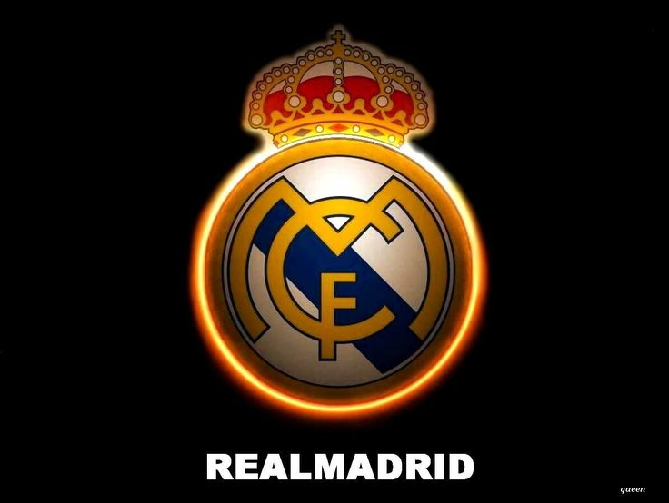

REAL MADRID
dengan Athletic Bilbao dan Barcelona club ini juga merupakan club dengan torehan piala UCL terbanyak.
Awal mula Real Madrid dimulai saat sepak bola diperkenalkan ke Madrid oleh para akademisi dan mahasiswa dari Institución libre de enseñanza yang di dalamnya termasuk beberapa lulusan dari Universitas Oxford dan Universitas Cambridge.
UCL MADRID
Klub ini merupakan salah satu klub sepak bola terkaya di dunia dalam hal pendapatan, senilai €968,3 juta dan total aset yang senilai €7,2miliar (atau $7,2 miliar) di 2019.
Klub ini memantapkan dirinya sebagai kekuatan utama dalam sepak bola Spanyol dan Eropa selama tahun 1950.
LA LIGA CAMPEONES

Kata Real ("dari kerajaan") Spanyol dan dianugerahkan ke klub oleh Raja Alfonso XIII pada tahun 1920 bersama-sama dengan mahkota kerajaan di lambang klub.
Klub ini telah memainkan pertandingan kandang di Stadion Santiago Bernabéu dengan kapasitas 85.454 di pusat kota Madrid sejak tahun 1947.
LINE UP REAL MADRID 2014
Madrid,Jun 30 2014
Real Madrid memiliki banyak persaingan lama, terutama El Clásico dengan Barcelona dan El Derbi madrileño dengan Atlético Madrid.
About Me
Some text about me in culpa qui officia deserunt mollit anim..
Popular Post


Follow Me
Mereka mendirikan Football Club Sky pada 1897 yang kemudian kerap bermain sepak bola secara rutin pada hari Minggu pagi di Moncloa. Klub ini kemudian terpecah menjadi dua pada tahun 1900, yaitu: New Foot-Ball de Madrid dan Club Español de Madrid.[7] Klub terakhir terpecah lagi pada tahun 1902 yang kemudian menghasilkan pembentukan Madrid Football Club pada tanggal 6 Maret 1902.[2]